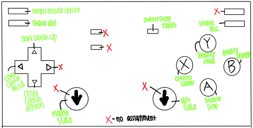
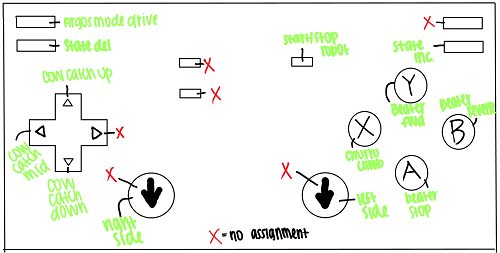

In order to find a button for our argos mode drive, we made a rough draft of our game controller listing the functions of each button. For example, the 'X' button is for the churo climb, the 'A' button is for our beater to stop, etc. We had about 5 unused buttons so in the end, we decided on using the top left button for argos mode drive. Now that we have all our function per button lsited out, it will be a lot easier to use this diagram for reference if we ever need to add another function or forget what a button does.
From now on, we should well-document everything about our robot, as we had to look in the code to actually see what our controller layout is. As well, we really, really need to let our drivers practice because they should have known the buttons as well.